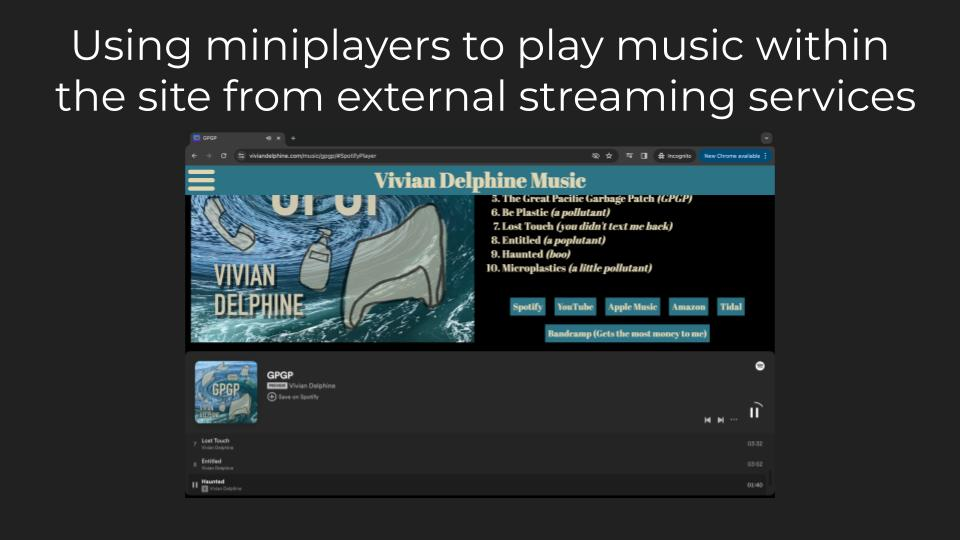

I wanted a home to share all of my music in all places it was available that I could customize to my liking. I was inspired by Radiohead's "Public Library" where they display all of the media associated with each album.
In this project, I decided to focus more on using CSS than relying on JavaScript. I created a grid of my four musical projects and then created a themed landing page for each album, using matching colors and fonts where possible. I then included a miniplayer for each streaming service so that the user can listen to the music while staying on the site.
© 2024 Nadine Jackson